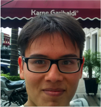

The RSAT team
| Project leaders | |||
|---|---|---|---|
 |
Jacques van Helden
Professor Aix-Marseille Université (France) |
Project leader (1997-now) | Development, evaluation and applications of algorithms for the analysis of regulatory sequences and biological networks. |
 |
Morgane Thomas-Chollier
Associate professor at Ecole normale supérieure de Paris (France) |
RSAT developper since 2007 |
NGS and ChIP-seq methods Matrix-based pattern matching. Matrix score distributions. Detection of cis-regulatory modules. Renovation of the web site. |
 |
Alejandra Medina-Rivera
Associate professor at International Laboratory for the Research on the Human Genome, UNAM (Mexico) |
RSAT developper since 2008 |
NGS and ChIP-seq methods Evaluation of PSSM quality. Evolution of bacterial regulation. Identification of regulatory variants. |
| Active developpers | |||
 |
Jaime Castro
Post-doc Centre for Molecular Medicine Norway (NCMM) (Norway) |
RSAT developper since 2013 | Clustering of motifs. Methods to measure motif similarity. Methods to measure motif enrichment. Mantainer of motif databases. |
|
|
Nga Thi Thuy NGUYEN
Ingénieure d'étude at CNRS (IFB contract) (IBENS,Paris,France) |
Since 2016 |
Web site maintenance Virtual machine Implementation and maintenance of the Web services. RSATicus |
|  | Walter Santana
Bachelor student at Genomic sciences (UNAM, Mexico) |
Since 2016 |
Identification of regulatory variants |
 |
Matthieu Defrance
Associate professor, Computer Science Department, Université Libre de Bruxelles (Belgium) |
Since 2007 |
Algorithms for motif discovery.
Matrix-based pattern matching. Detection of cis-regulatory modules. |
| Former Developpers | |||
 |
Céline Hernandez
Bioinformatic engineer at Ecole normale supérieure de Paris (France) |
Engineer (2014 - now) |
Development of new Web services clients in Python. Virtual machine. |
 |
Olivier Sand
Research Engineer at CNRS (Lille,France) |
Postdoc (2004-2009) | Implementation and maintenance of the Web services. |
 |
Sylvain Brohée
Postdoctoral Fellow at the Jules Bordet Institute (BCTL - Breast Cancer Translational Research Lab)(Belgium). |
PhD student (2005-2008) |
Network analysis tools.
Evaluation of graph-based clustering algorithms. Protein interaction and regulatory networks. |
 |
Didier Croes
Senior Bioinformatician at UZ Brussel (Belgium) |
PhD student (2001-2006), postdoc (2010-2011). | Analysis of metabolic networks. |
 |
Karoline Faust
Principal investigator, KU Leuven, (Belgium) |
PhD student (2005-2010) | Analysis of metabolic networks. |
 |
Rekin's Janky
Bioinformatician (Scientist) at the VIB Nucleomics Core (Belgium) |
PhD student (2004-2007) | Discovery of phylogenetic footprints in bacterial promoters. |
 |
Gipsi Lima Mendez
Postdoctoral Fellow at Raes Lab, VIB and KU Leuven. (Belgium) |
PhD student (2005-2008) and Postdoc (2008-2009) |
Algorithms for fuzzy clustering on graphs. |
 |
Jean-Valéry Turatsinze
Postdoctoral Fellow at the Centre for Diabetes Research, Faculty of Medecine, Université Libre de Bruxelles (Belgium) |
PhD student (2006-2009) | Matrix-based pattern mathing.
Detection of cis-regulatory modules. |
 |
Eric Vervisch
Entrepreneur (Singapore) |
Research fellow (2007-2008) | Design of Taverna workflows for the analysis of cis-regulatory elements and molecular networks. |
{kind=link}